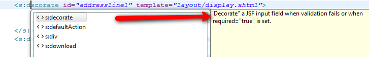
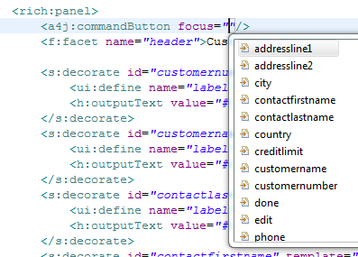

OpenOn |
|
|
EL Variables |
OpenOn's are now available for source elements. |
Code assist |
|
|
Unified EL completion for Seam and JSF projects |
EL completion for Seam and JSF projects are now unified (uses same codebase). In previous releases there were small differences between how code completion were done for projects with or without Seam configured, i.e. code completion for Seam variables were not available in Wizards and property sheets and some of the features of JBoss EL were not honored in JSF projects. |
|
EL completion in style attributes |
Code assist for EL variables are now available in style attributes of XHTML files. |
|
Information hover for JSF tags |
When code completing JSF/Facelets tags we now show a information box with the related tag documentation. Descriptions are fetched from TLD and facelet information.  |
|
Code assist for attributes expecting an ID in richfaces |
Code assist now provides id completion for attributes that is known to work with ID's (for, focus, reRender, etc.). Both single and multi-valued (comma separated) completion are supported.  |